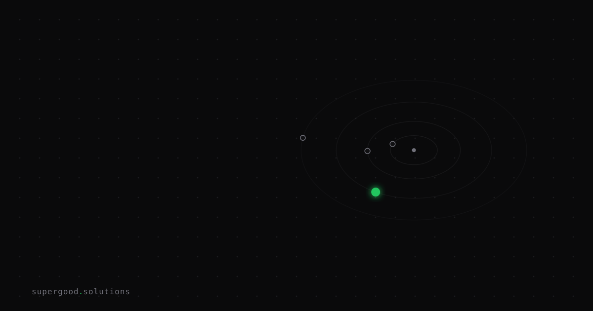

Your Long-Running Agent Has No Midpoint Recovery Plan
TL;DR: As enterprises push AI agents into multi-hour workflows, a silent budget killer is hiding in plain sight: when anything goes wrong, you restart from scratch. Checkpoint-and-resume isn't an optional optimization — it's the difference between a production system and an expensive science experiment.
Key Insight
The retry logic that works fine for a 30-second API call becomes a liability the moment your agent is 4 hours into a financial data migration. Short-lived agents can afford to restart from zero. Long-running agents cannot — and yet most enterprise deployments treat them identically.
The math is brutal. If a 6-hour agent task fails at hour 5 due to an API timeout, you've just queued up another 6-hour run and doubled your LLM spend. Do that three times and you've paid for the task ten times over. The failure rate compounds too: for tasks running over 4 hours without state persistence, research from Hendricks AI puts the risk of total task failure 90% higher than equivalent checkpointed workflows.
The counterintuitive part: checkpointing doesn't require a dramatic architecture overhaul. It requires thinking in business milestones rather than code lines.
Why Teams Miss This
Teams port their synchronous, request-response mental model into agent architecture. They test the happy path — agent runs start to finish, task completes, result lands. It works beautifully in staging.
Then production happens: a rate limit at step 7 of 12, a transient database timeout, a cloud instance preempted at 3 AM. The agent dies. The team restarts it manually. They chalk it up to infra noise rather than a structural gap in the agent's design.
The second failure mode is over-engineering in the wrong direction. Teams reach for distributed locks, vector memory stores, and elaborate state machines before they've solved the simpler problem: can this agent tell me where it was when it died?
Most can't. Most weren't designed to.
How to Actually Do It
Checkpoints belong at business logic boundaries, not arbitrary time intervals. For a financial processing agent that validates data, calls external APIs, transforms records, and writes outputs — the right checkpoint is after each of those stages, not every 10 minutes.
Here's the pattern in concrete terms using Google's Agent Development Kit (ADK), which ships this as a first-class primitive:
async for event in self.runner.run_async(
user_id=user_id,
session_id=session_id,
new_message=types.Content(...),
state_delta={
"current_step": OnboardingStep.DOCUMENTS_SIGNED,
"pending_signals": [],
},
):
...The state_delta argument atomically applies state before the next inference call. When an external event (a webhook, a human approval, a database write completing) fires, the agent resumes exactly where the business process left off — not where the chat history ran out.
Three things make this work in production:
- Named checkpoint constants — replace inferred conversation state with explicit enum values (
VALIDATION_COMPLETE,APIS_CALLED,RECORDS_TRANSFORMED). If you can't name the state in one word, you don't have a checkpoint, you have a guess.
2. Atomic state writes — checkpoints that half-save are worse than no checkpoints. Write state as a single atomic operation. SQLite for local dev, Cloud SQL or DynamoDB in production. The ADK architecture runs the same code against either without modification.
3. Trigger-based resumption — don't poll. Webhooks or event queues wake the agent when real-world events complete. Polling during idle periods burns tokens and compute for no reason.
The overhead is negligible: according to Hendricks AI's benchmarks, checkpoint operations add 2-5% execution overhead while preventing 40-70% of total processing time loss on failure. Differential state tracking (only writing changed state, not the full snapshot) can cut checkpoint latency from 45 seconds to 3 seconds.
When to implement: if your agent task exceeds 30 minutes, costs more than $100 per execution, touches irreversible external operations, or runs on a time-sensitive deadline — you need checkpoints. All four conditions? You needed them yesterday.
What We've Learned
A global accounting firm that implemented business-milestone checkpointing across their agent fleet reported a 73% reduction in failure-related costs — roughly $2.4M in recovered productivity annually. A healthcare data migration team cut their recovery time from 8-hour full restarts down to 45 minutes of incremental reprocessing.
The architecture pattern that enables this isn't exotic. It's a state machine with named steps, atomic writes, and a resume handler wired to your event system.
Start with your most expensive agent task — the one where a failure stings most. Map its natural business stages. Add a checkpoint write after each one. Wire a resume path that reads that checkpoint on startup instead of reinitializing from scratch.
That's it. No new infrastructure. No framework migration. Just a team that finally knows where their agent was when the lights went out.
Sources
- Checkpoint Patterns for Long-Running AI Agent Tasks — Hendricks AI
- Build Long-Running AI Agents That Pause, Resume, and Never Lose Context with ADK — Google Developers Blog
- 7 State Persistence Strategies for Long-Running AI Agents in 2026 — Indium Tech
- AI Agent Workflow Checkpointing and Resumability — Zylos Research